Overview
cograph accepts network data in all common formats used in R. Pass
any supported object directly to splot() and it will be
automatically parsed.
Supported Formats
1. Adjacency/Weight Matrices
A square numeric matrix where M[i,j] represents the edge
weight from node i to node j.
Sources:
-
cor(),cov()— correlation and covariance matrices -
qgraph::getWmat()— extract weights from qgraph objects -
bootnet::estimateNetwork()— network estimation output -
psychonetrics— structural equation modeling networks -
markovchain— transition probability matrices -
as.matrix(dist())— distance/dissimilarity matrices
Auto-detection:
- Symmetric matrices are treated as undirected (upper triangle only)
- Asymmetric matrices are treated as directed (all entries)
- Node labels extracted from
rownames()/colnames()
Usage:
# Create a weighted adjacency matrix
adj_matrix <- matrix(
c(0, 0.8, 0.5, 0.2,
0.8, 0, 0.6, 0,
0.5, 0.6, 0, 0.7,
0.2, 0, 0.7, 0),
nrow = 4, byrow = TRUE,
dimnames = list(c("A", "B", "C", "D"), c("A", "B", "C", "D"))
)
# Plot directly from matrix
splot(adj_matrix, title = "From Adjacency Matrix")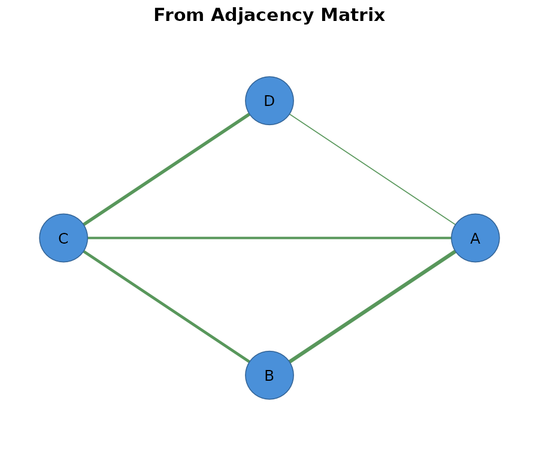
# Create a directed (asymmetric) matrix
directed_matrix <- matrix(
c(0, 0.9, 0, 0,
0.2, 0, 0.7, 0,
0.5, 0, 0, 0.8,
0, 0.3, 0.4, 0),
nrow = 4, byrow = TRUE,
dimnames = list(c("A", "B", "C", "D"), c("A", "B", "C", "D"))
)
# Directed networks detected automatically
splot(directed_matrix, title = "Directed Network (auto-detected)")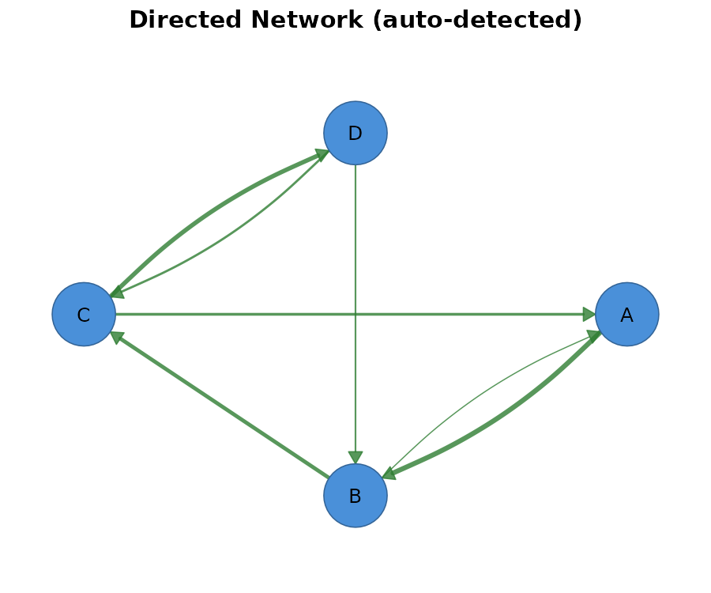
2. Edge List Data Frames
A data frame where each row is an edge with source, target, and optional weight columns.
Sources:
- Database exports (SQL joins on relationship tables)
- CSV files from SNAP, Pajek, KONECT repositories
igraph::as_data_frame(g, what = "edges")- API responses from social platforms
- Parsed log files
Column detection (case-insensitive):
| Purpose | Recognized names |
|---|---|
| Source |
from, source, src,
v1, node1, i
|
| Target |
to, target, tgt,
v2, node2, j
|
| Weight |
weight, w, value,
strength
|
Falls back to columns 1 and 2 if no match.
Usage:
# Create an edge list data frame
edges <- data.frame(
from = c("Alice", "Alice", "Bob", "Bob", "Carol", "Dave"),
to = c("Bob", "Carol", "Carol", "Dave", "Dave", "Alice"),
weight = c(0.9, 0.5, 0.7, 0.3, 0.8, 0.4)
)
print(edges)
#> from to weight
#> 1 Alice Bob 0.9
#> 2 Alice Carol 0.5
#> 3 Bob Carol 0.7
#> 4 Bob Dave 0.3
#> 5 Carol Dave 0.8
#> 6 Dave Alice 0.4
# Plot from edge list
splot(edges, title = "From Edge List")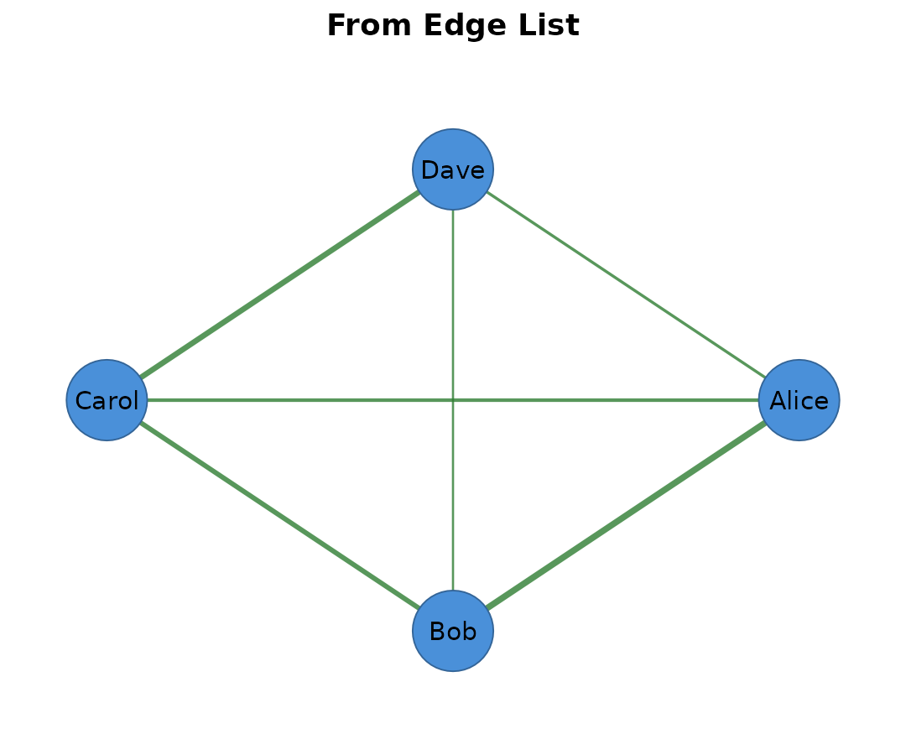
# Alternative column names work too
edges_alt <- data.frame(
source = c("X", "X", "Y", "Z"),
target = c("Y", "Z", "Z", "X"),
value = c(1, 0.5, 0.8, 0.3)
)
splot(edges_alt, title = "Alternative Column Names")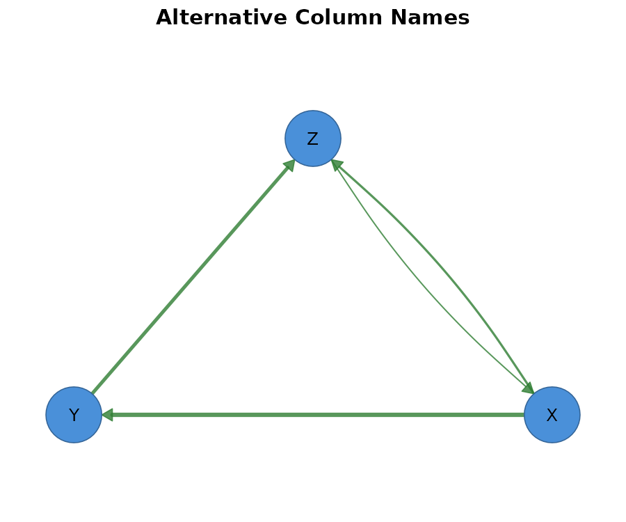
3. igraph Objects
Objects of class igraph from the igraph package.
Sources:
-
graph_from_data_frame(),graph_from_adjacency_matrix() -
make_graph("Zachary"),make_ring(),sample_pa(), etc. -
read_graph()— import from GraphML, GML, Pajek, edge lists -
intergraph::asIgraph()— convert from network objects
Preserved:
- Vertex attributes:
V(g)$name,V(g)$color, etc. - Edge attributes:
E(g)$weight,E(g)$type, etc. - Directedness from
is_directed(g)
Usage:
# Create igraph objects
g_ring <- igraph::make_ring(6)
igraph::V(g_ring)$name <- LETTERS[1:6]
splot(g_ring, title = "igraph Ring Graph")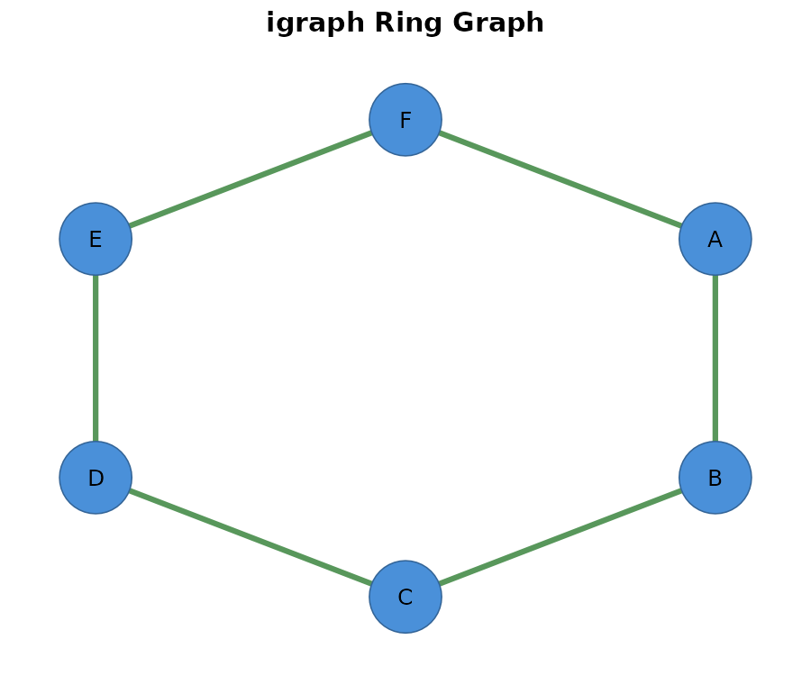
# Famous graph with vertex names
g_zachary <- igraph::make_graph("Zachary")
splot(g_zachary, title = "Zachary Karate Club")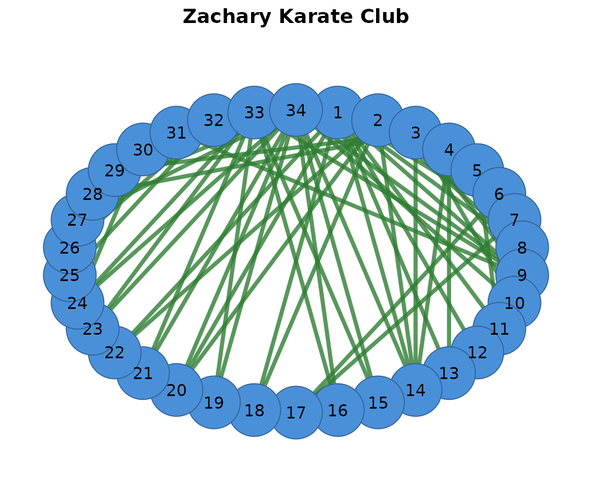
# Weighted graph
g_weighted <- igraph::graph_from_adjacency_matrix(
adj_matrix,
mode = "undirected",
weighted = TRUE
)
splot(g_weighted, title = "Weighted igraph")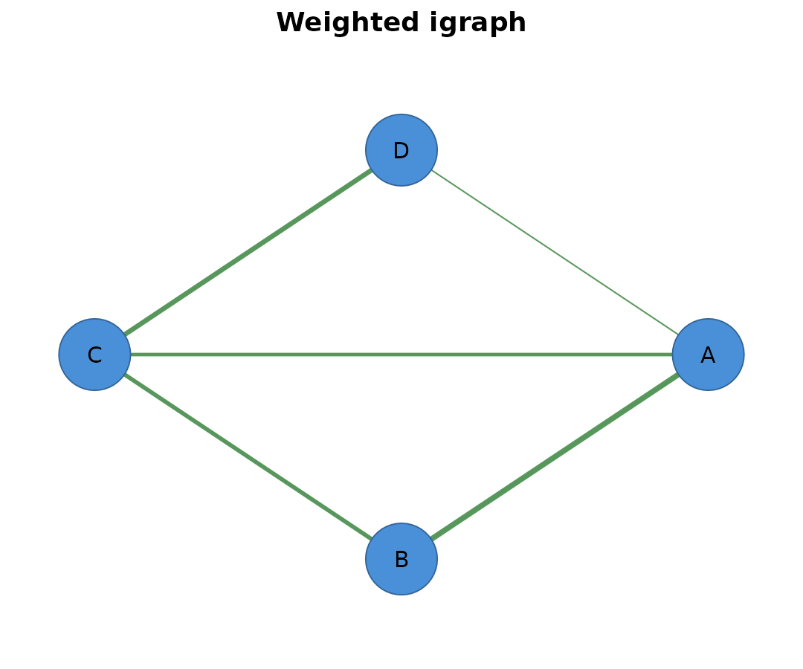
4. network Objects (statnet)
Objects of class network from the network/statnet
ecosystem.
Sources:
-
network::network()— create from matrix or edge list -
ergmpackage — exponential random graph models -
snapackage — social network analysis -
intergraph::asNetwork()— convert from igraph - Import from Pajek, UCINET formats
Preserved:
- Vertex attributes via
%v%operator - Edge attributes via
%e%operator - Directedness from
is.directed()
Usage:
# Create a network object
net_obj <- network::network(adj_matrix, directed = FALSE)
splot(net_obj, title = "From statnet network")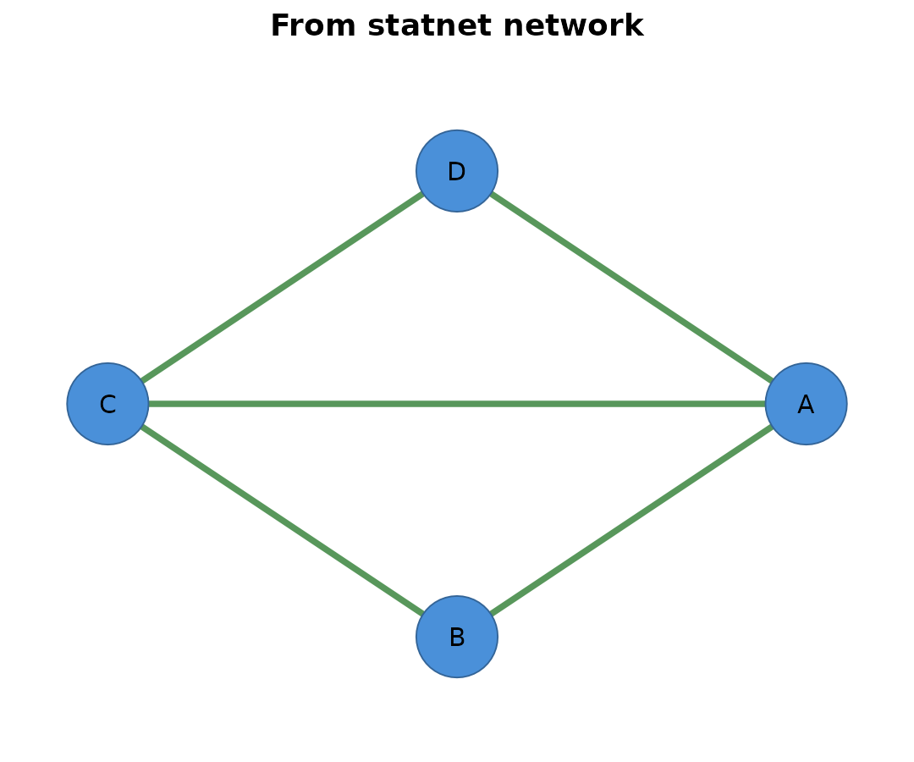
5. qgraph Objects
Objects created by the qgraph package.
Sources:
qgraph::qgraph(..., DoNotPlot = TRUE)-
bootnet::estimateNetwork()results -
psychonetricsmodel outputs
Preserved:
- Layout coordinates from
q$layout - Edge weights from
q$Edgelist - Node labels from
q$graphAttributes$Nodes
Usage:
# Create a qgraph object (without plotting)
q <- qgraph::qgraph(adj_matrix, DoNotPlot = TRUE)
# Plot with cograph (preserves layout)
splot(q, title = "From qgraph Object")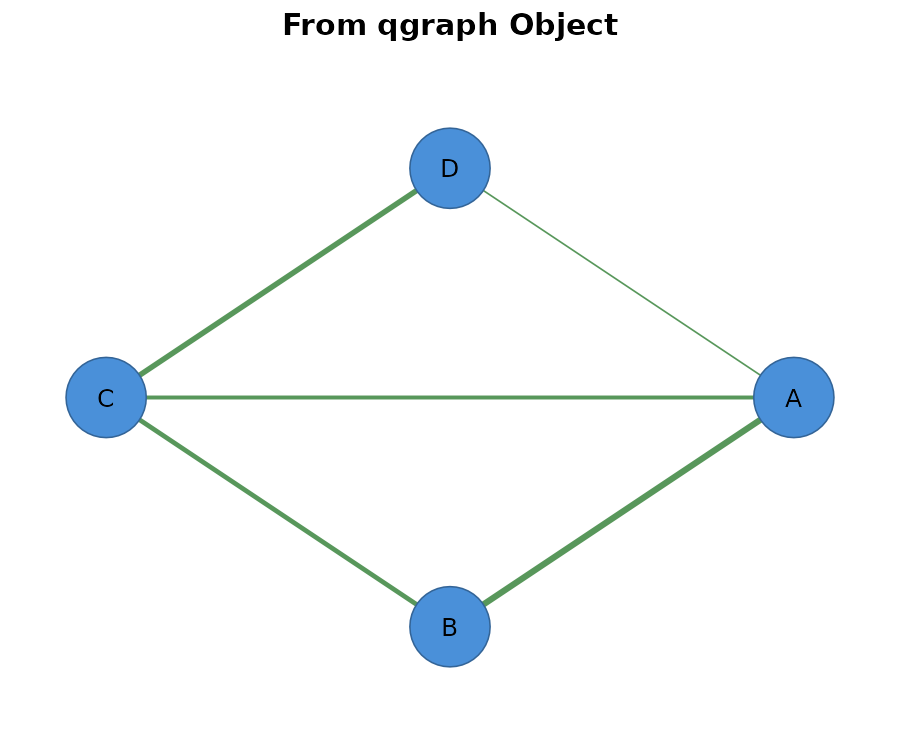
6. TNA Objects
Objects of class tna from the tna package (Transition
Network Analysis).
Sources:
-
tna::tna()— build from sequence data -
tna::group_tna()— grouped transition analysis - Learning analytics, process mining, behavioral sequences
Extracted:
- Transition matrix from
$weights - State labels from
$labels - Initial probabilities from
$inits
Usage:
library(tna)
# Build TNA model from included dataset
tna_model <- tna(group_regulation)
# Plot TNA model directly
splot(tna_model, title = "From TNA Model")
# With donut nodes showing initial probabilities
splot(tna_model,
node_shape = "donut",
donut_fill = tna_model$inits,
title = "TNA with Initial Probabilities")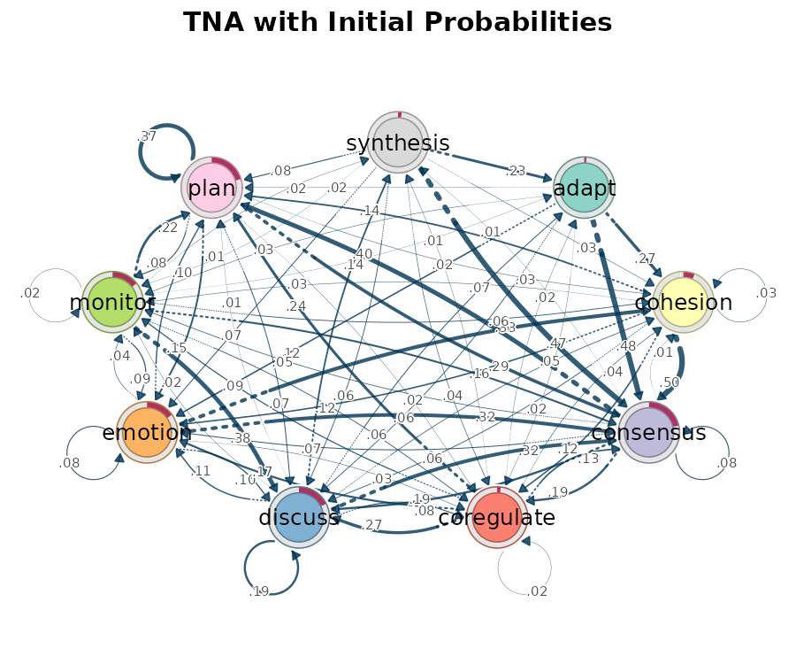
Weight Preprocessing
| Parameter | Effect |
|---|---|
weight_digits = 2 |
Round weights; edges rounding to zero are removed |
threshold = 0.3 |
Remove edges with |weight| < threshold |
minimum = 0.3 |
Alias for threshold (qgraph compatibility) |
maximum = 1.0 |
Set reference maximum for edge width scaling |
edge_scale_mode |
"linear", "sqrt", "log", or
"rank"
|
# Create a network with varying weights
weights_matrix <- matrix(
c(0, 0.1, 0.5, 0.9,
0.1, 0, 0.2, 0.7,
0.5, 0.2, 0, 0.3,
0.9, 0.7, 0.3, 0),
nrow = 4, byrow = TRUE,
dimnames = list(LETTERS[1:4], LETTERS[1:4])
)
# Apply threshold to remove weak edges
splot(weights_matrix, threshold = 0.4, title = "Threshold = 0.4 (weak edges removed)")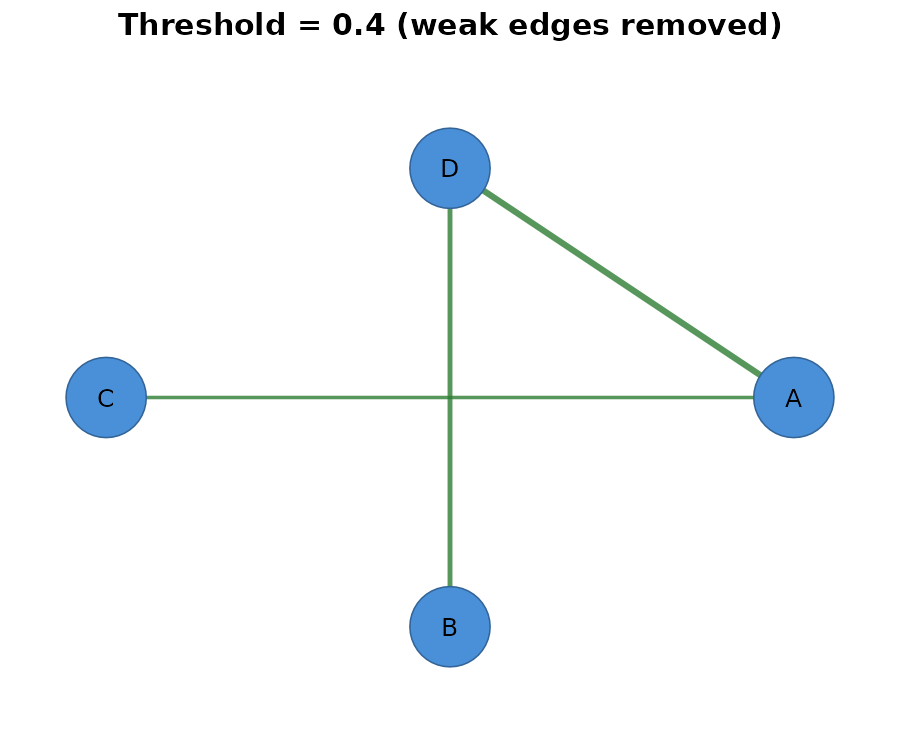
Special Cases
| Feature | Behavior |
|---|---|
| Negative weights | Colored differently (green/red by default) |
| Self-loops | Rendered as loops; control angle with
loop_rotation
|
| Reciprocal edges | Curved apart automatically in directed networks |
| Duplicate edges | Error by default; use edge_duplicates to aggregate |
# Network with negative weights (e.g., correlation matrix)
cor_matrix <- matrix(
c(1, 0.8, -0.5, 0.3,
0.8, 1, 0.2, -0.7,
-0.5, 0.2, 1, 0.4,
0.3, -0.7, 0.4, 1),
nrow = 4, byrow = TRUE,
dimnames = list(LETTERS[1:4], LETTERS[1:4])
)
diag(cor_matrix) <- 0
splot(cor_matrix, title = "Negative Weights (red = negative)")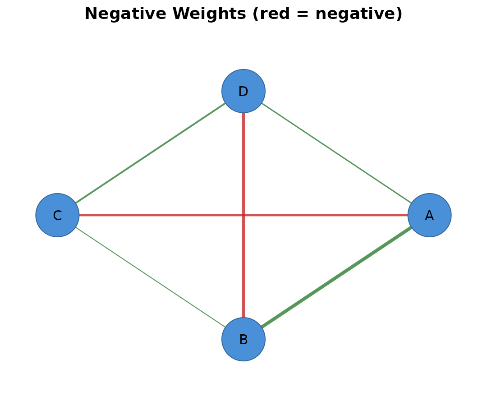
Conversion Functions
cograph provides functions to convert between formats. All conversion functions accept any supported input type.
as_cograph() / to_cograph() — Import to cograph
Convert any format to a cograph_network object.
Accepted inputs:
-
matrix— Adjacency/weight matrix -
data.frame— Edge list with from/to/weight columns -
igraph— igraph object -
network— statnet network object -
qgraph— qgraph object -
tna— TNA model object -
group_tna— Grouped TNA model object
# From matrix
net <- as_cograph(adj_matrix)
print(net)
#> Cograph network: 4 nodes, 5 edges ( undirected )
#> Source: matrix
#> Nodes (4): A, B, C, D
#> Edges: 5 / 6 (density: 83.3%)
#> Weights: [0.200, 0.800] | mean: 0.560
#> Strongest edges:
#> A -- B 0.800
#> C -- D 0.700
#> B -- C 0.600
#> A -- C 0.500
#> A -- D 0.200
#> Layout: none
# From edge list
net_edges <- as_cograph(edges)
print(net_edges)
#> Cograph network: 4 nodes, 6 edges ( undirected )
#> Source: edgelist
#> Data: data.frame (6 x 3)
#> Nodes (4): Alice, Bob, Carol, Dave
#> Weights: 0.3 to 0.9
#> Layout: none
# Override auto-detected directedness
net_directed <- as_cograph(adj_matrix, directed = TRUE)
cat("Directed:", attr(net_directed, "directed"), "\n")
#> Directed:
# From igraph
g <- igraph::make_ring(5)
igraph::V(g)$name <- LETTERS[1:5]
net_from_igraph <- as_cograph(g)
print(net_from_igraph)
#> Cograph network: 5 nodes, 5 edges ( undirected )
#> Source: igraph
#> Nodes (5): A, B, C, D, E
#> Weights: 1 (all equal)
#> Layout: noneThe function is idempotent — passing a cograph_network
returns it unchanged.
to_igraph() — Export to igraph
Convert any format to an igraph object:
# From matrix
g <- to_igraph(adj_matrix)
cat("Vertices:", igraph::vcount(g), "\n")
#> Vertices: 4
cat("Edges:", igraph::ecount(g), "\n")
#> Edges: 5
# From cograph_network
net <- as_cograph(adj_matrix)
g2 <- to_igraph(net)
# Check attributes preserved
cat("Vertex names:", paste(igraph::V(g2)$name, collapse = ", "), "\n")
#> Vertex names: A, B, C, Dto_data_frame() / to_df() — Export to Edge List
Convert any format to an edge list data frame:
# From matrix
df <- to_df(adj_matrix)
print(df)
#> from to weight
#> 1 A B 0.8
#> 2 A C 0.5
#> 3 A D 0.2
#> 4 B C 0.6
#> 5 C D 0.7
# From cograph_network
net <- as_cograph(adj_matrix)
df2 <- to_df(net)
print(df2)
#> from to weight
#> 1 A B 0.8
#> 2 A C 0.5
#> 3 B C 0.6
#> 4 A D 0.2
#> 5 C D 0.7Output columns: from, to,
weight
to_matrix() — Export to Adjacency Matrix
Convert any format to an adjacency matrix:
# From cograph_network
net <- as_cograph(edges)
mat <- to_matrix(net)
print(mat)
#> Alice Bob Carol Dave
#> Alice 0.0 0.9 0.5 0.4
#> Bob 0.9 0.0 0.7 0.3
#> Carol 0.5 0.7 0.0 0.8
#> Dave 0.4 0.3 0.8 0.0
# From igraph (with weights)
g <- igraph::graph_from_adjacency_matrix(
matrix(c(0, 1, 0, 1, 1, 0, 1, 0, 0, 1, 0, 1, 1, 0, 1, 0), 4, 4,
dimnames = list(c("W", "X", "Y", "Z"), c("W", "X", "Y", "Z"))),
mode = "undirected",
weighted = TRUE
)
mat <- to_matrix(g)
print(mat)
#> W X Y Z
#> W 0 1 0 1
#> X 1 0 1 0
#> Y 0 1 0 1
#> Z 1 0 1 0Returns a square numeric matrix with row/column names preserved.
to_network() — Export to statnet network
Convert any format to a statnet network object:
# Convert matrix to statnet network
statnet_net <- to_network(adj_matrix)
print(statnet_net)
#> Network attributes:
#> vertices = 4
#> directed = FALSE
#> hyper = FALSE
#> loops = FALSE
#> multiple = FALSE
#> bipartite = FALSE
#> total edges= 5
#> missing edges= 0
#> non-missing edges= 5
#>
#> Vertex attribute names:
#> vertex.names
#>
#> Edge attribute names:
#> weightRequires the network package. Preserves edge weights and
vertex names.
Conversion Summary
| Function | Output | Use Case |
|---|---|---|
as_cograph() / to_cograph()
|
cograph_network |
Import for visualization with splot |
to_igraph() |
igraph |
Use igraph’s analysis functions |
to_df() |
data.frame |
Export to CSV, database, or other tools |
to_matrix() |
matrix |
Export to adjacency matrix for other packages |
to_network() |
network |
Use with statnet/ergm ecosystem |
Format Summary
| Input | Class | Directed | Weights | Labels |
|---|---|---|---|---|
| Matrix | matrix |
Symmetry check | Cell values | dimnames |
| Edge list | data.frame |
Reciprocal check | weight column | Unique nodes |
| igraph | igraph |
is_directed() |
weight attr | name attr |
| network | network |
is.directed() |
weight attr | vertex.names |
| qgraph | qgraph |
Edgelist | Edgelist | Node names |
| tna | tna |
Always TRUE | $weights |
$labels |